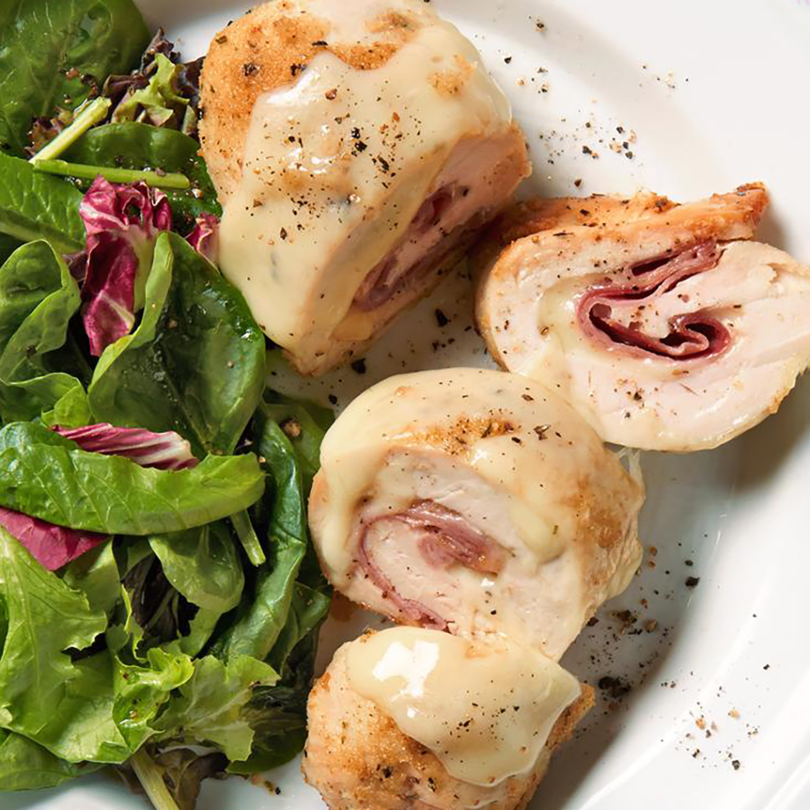

Chicken Cordon Bleu

Description
My wife's favorite! A cordon bleu is a dish that traditionally consists of meat wrapped around cheese, then breaded and pan-fried or deep-fried. Many modern versions of the classic French recipe, such as this one, are baked.
Prep: 15 mins
Cook: 1 hr
Total: 1hr 15 mins
Servings: 8
Ingredients
- Nonstick cooking spray
- 4 skinless, boneless chicken breast halves
- ¼ teaspoon salt
- ⅛ teaspoon ground black pepper
- 6 slices Swiss cheese
- 4 slices cooked ham
- ½ cup seasoned bread crumbs
Steps
- Preheat oven to 350 degrees F (175 degrees C). Coat a 7x11-inch baking dish with nonstick cooking spray.
- Pound chicken breasts to 1/4 inch thickness.
- Sprinkle each piece of chicken on both sides with salt and pepper. Place 1 Swiss cheese slice and 1 ham slice on top of each breast. Roll up each breast, and secure with a toothpick. Place in the prepared baking dish, and sprinkle chicken evenly with bread crumbs.
- Bake in the preheated oven until chicken is no longer pink, 30 to 35 minutes.
- Remove from the oven, and place 1/2 Swiss cheese slice on top of each breast. Return to the oven until cheese has melted, 3 to 5 minutes. Remove toothpicks and serve immediately.
Back to Top
Back to Main Menu